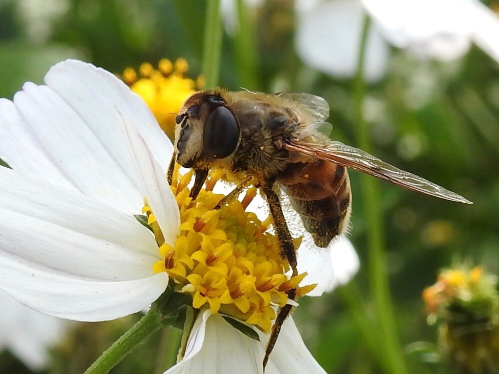
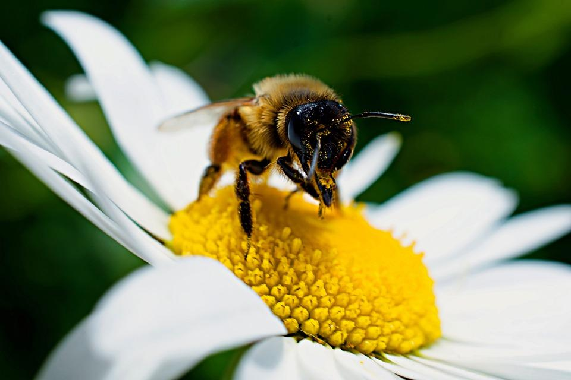

Perdida de polinozadores debido a la disminución de areas verdes



El mundo cada vez está más urbanizado. Desde 2007,
más de la mitad de la población mundial ha estado
viviendo en ciudades, y se espera que dicha cantidad aumenta hasta el 60 % para 2030.